🐍 凯麦特
Kemet · 设计：Jacques Bariot & Guillaume Montiage · Matagot 出版 · 2–5 人 · 官方英文规则书全文翻译（12 页 · AI 辅助机翻）
本页收录《凯麦特》（Kemet, 2012）的原版官方规则书全部 12 页（底本：BGG 官方上传（Matagot 2021-05 上传的 Kemet: Blood and Sand 更新版英文规则书），kemet-rulebook-en），逐页随图排列，点击任意图片即可放大查看；每页下方默认折叠了该页的 AI 辅助中文机翻对照，需要时可展开。规则内容归 Matagot 及版权方所有，收录仅供个人学习查阅。
整理说明：机翻对照按本站术语口径对齐（牌库/手牌/回合/轮/板块/指示物等），PDF 图文混排页的语序可能与原书视觉顺序略有出入；规则细节请一律以页面上方原书页面为准。
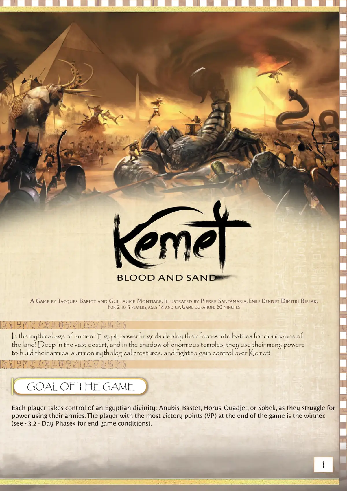
📝 第 1 页 AI 机翻对照（点击展开）
一款由 JACQUES BARIOT 和 GUILLAUME MONTIAGE 设计，PIERRE SANTAMARIA、EMILE DENIS 和 DIMITRI BIELAK 绘制的游戏
2至5名玩家，14岁及以上。游戏时长：60分钟
在神话般的古埃及时代，强大的神明将他们的力量投入战斗，争夺这片土地的主导权！在广阔沙漠的深处，在宏伟神庙的阴影下，他们运用多种力量来组建军队，召唤神话生物，并战斗以获得对 Kemet（克麦特）的控制权！
每位玩家控制一位埃及神祇：阿努比斯（Anubis）、贝斯特（Bastet）、荷鲁斯（Horus）、瓦吉特（Ouadjet）或索贝克（Sobek），他们使用自己的军队争夺权力。游戏结束时拥有最多胜利点（VP）的玩家是获胜者。
（关于游戏结束条件，请参见"3.2 - 白天阶段"）。
游戏目标
<!--page:2>
港口：
1.1 游戏版图
1- 游戏组件
游戏版图有两面。一面右上角有紫色风暴，用于基础游戏和2至5名玩家。另一面不用于基础游戏。
根据玩家数量使用以下配置之一：
组件：
1个游戏版图
64张力量板块，4种颜色（16张红宝石，16张蓝宝石，16颗钻石，16颗缟玛瑙）
10个生物模型
6个雇佣兵模型
33张神圣干预卡
2张特殊战斗卡
80个胜利点指示物
5个银色和5个金色行动指示物
20个老兵指示物
5个雕像指示物
1张神圣干预卡和力量板块玩家辅助卡
每位玩家的组件（5种颜色）：
12个单位模型
5个行动指示物
1个个人版图
1个祈祷标记
1个命令标记
8张战斗卡
3个金字塔，每个分3部分
4个"购买力量板块"标记，4种颜色
4个金字塔顶，4种颜色（红宝石、蓝宝石、钻石和缟玛瑙）
版图包含以下区域类型：
每个区域由白色线条、尼罗河或版图边缘勾勒，除了由城墙勾勒的区域（Districts）。
包含紫色沙暴的区域在基础游戏中不使用，也不被视为在游戏中。
某些区域可能包含港口或方尖碑，它们影响移动。
2名玩家
贸易港口（蓝色）
军事港口（红色）
4名玩家
3名玩家
5名玩家
区域（Districts）：
每个城市由3个区域组成。
众神圣殿：
包含此建筑的区域。
沙漠：
不包含城市、圣殿或神庙的陆地区域。
神庙：
包含下面3个建筑之一的区域。
方尖碑：
"每种配置中版图的深色部分在使用相应玩家数量游戏时不使用。"
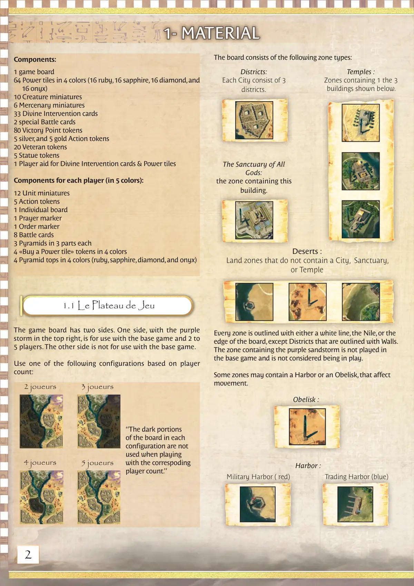
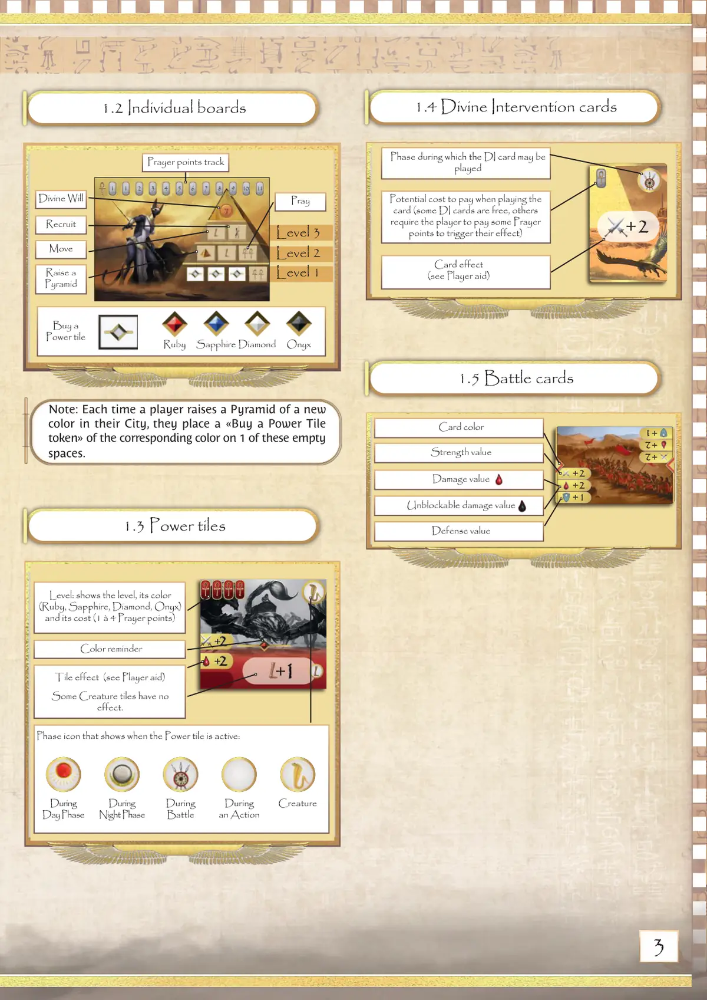
📝 第 3 页 AI 机翻对照（点击展开）
+ + 2
+2
+2
+2
+2
+2
+2
+2
+2
+1
+1
+2
+2
+1
+1
1.3 能力板块
1.4 神圣干预卡牌
1.5 战斗卡牌
1.2 个人版图
注意：每当玩家在自己的城市中建造一座新颜色的金字塔时，他们会在这些空格之一上放置一个对应颜色的"购买能力板块指示物"。
移动
红宝石
蓝宝石 钻石 缟玛瑙
购买能力板块
招募
祈祷
颜色提醒
卡牌效果
（见玩家辅助卡）
白天阶段
夜间阶段
战斗期间
行动期间
生物
板块激活时显示的阶段图标：
祈祷点数追踪
建造金字塔
神圣意志
等级：显示等级、其颜色（红宝石、蓝宝石、钻石、缟玛瑙）及其成本（1至4点祈祷点）
可播放神圣干预卡牌的阶段
防御数值
伤害数值
不可阻挡伤害数值
力量数值
卡牌颜色
板块效果（见玩家辅助卡）
一些生物板块没有效果。
使用卡牌时可能需要支付的费用（一些神圣干预卡牌是免费的，其他需要玩家支付一些祈祷点来触发其效果）
1级
2级
3级
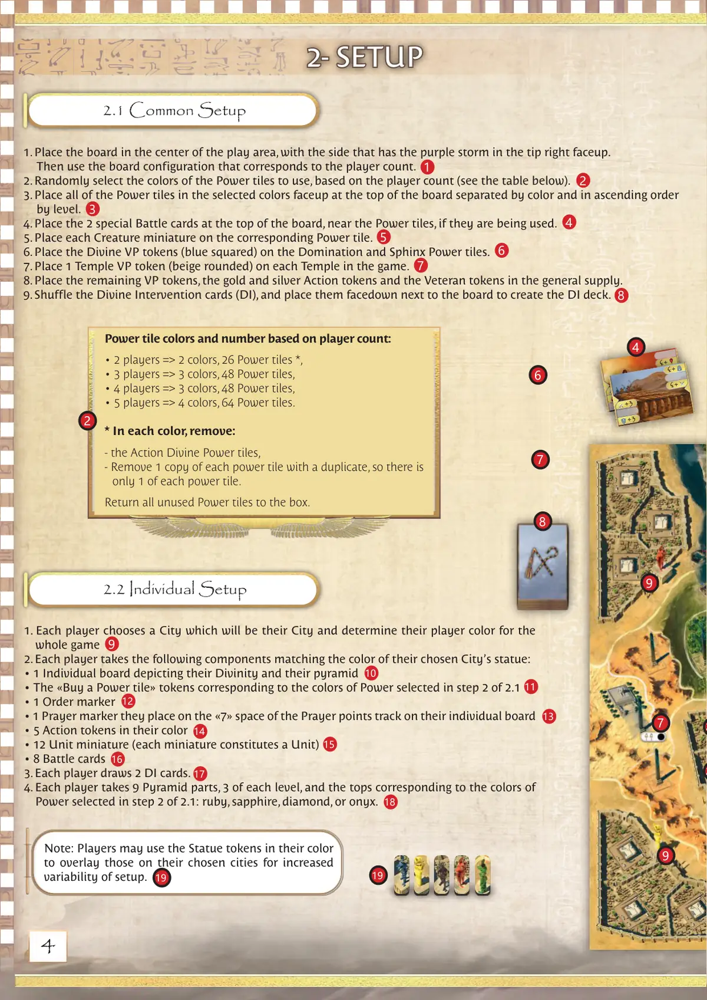
📝 第 4 页 AI 机翻对照（点击展开）
能量板块的颜色和数量基于玩家数量：
• 2 玩家 => 2 种颜色，26 张能量板块 *,
• 3 玩家 => 3 种颜色，48 张能量板块，
• 4 玩家 => 3 种颜色，48 张能量板块，
• 5 玩家 => 4 种颜色，64 张能量板块。
- 在每种颜色中，移除：
- 行动神力板块，
- 移除每张有重复的能量板块的一张副本，因此每种能量板块只有一张。
将所有未使用的能量板块放回盒中。
+3
+3
+3
+3
+3
+3
+3
+3
+3
+3
+3
+3
+3
+3
+3
+3
2- 设置
2- 设置
2.1 通用设置
2.2 个人设置
- 将版图放置在游戏区域的中央，带有紫色风暴的一侧朝向右上角正面朝上。
然后使用与玩家数量相对应的版图配置。
- 根据玩家数量随机选择要使用的能量板块颜色（见下表）。
- 将所选颜色的所有能量板块正面朝上放置在版图顶部，按颜色分开并按等级升序排列。
- 如果使用，将 2 张特殊的战斗卡放置在版图顶部，靠近能量板块处。
- 将每个生物模型放置在相应的能量板块上。
- 将神力胜利点指示物（蓝色方形）放置在支配和斯芬克斯能量板块上。
- 在游戏中的每个神殿上放置 1 个神殿胜利点指示物（米色圆形）。
- 将剩余的胜利点指示物、金色和银色行动指示物以及老兵指示物放置在通用供应区。
- 洗混神力干预卡（DI），并将其面朝下放在版图旁边，形成 DI 牌库。
- 每位玩家选择一个城市作为他们的城市，并确定他们在整个游戏中的玩家颜色。
- 每位玩家拿取以下与他们所选城市的雕像颜色相匹配的组件：
• 1 张描绘他们的神性和金字塔的个人版图
• 与 2.1 步骤 2 中所选能量板块颜色相对应的"购买能量板块"指示物
• 1 个顺序标记
• 1 个祈祷标记，他们将其放置在个人版图上的祈祷点轨迹的"7"格上
• 5 个他们颜色的行动指示物
• 12 个单位模型（每个模型构成一个单位）
• 8 张战斗卡
- 每位玩家抽取 2 张 DI 卡。
- 每位玩家拿取 9 个金字塔部件，每个等级 3 个，以及与 2.1 步骤 2 中所选能量板块颜色相对应的顶部：红宝石、蓝宝石、钻石或缟玛瑙。
注意：玩家可以使用他们颜色的雕像指示物覆盖在他们选择的城市上，以增加设置的变化性。
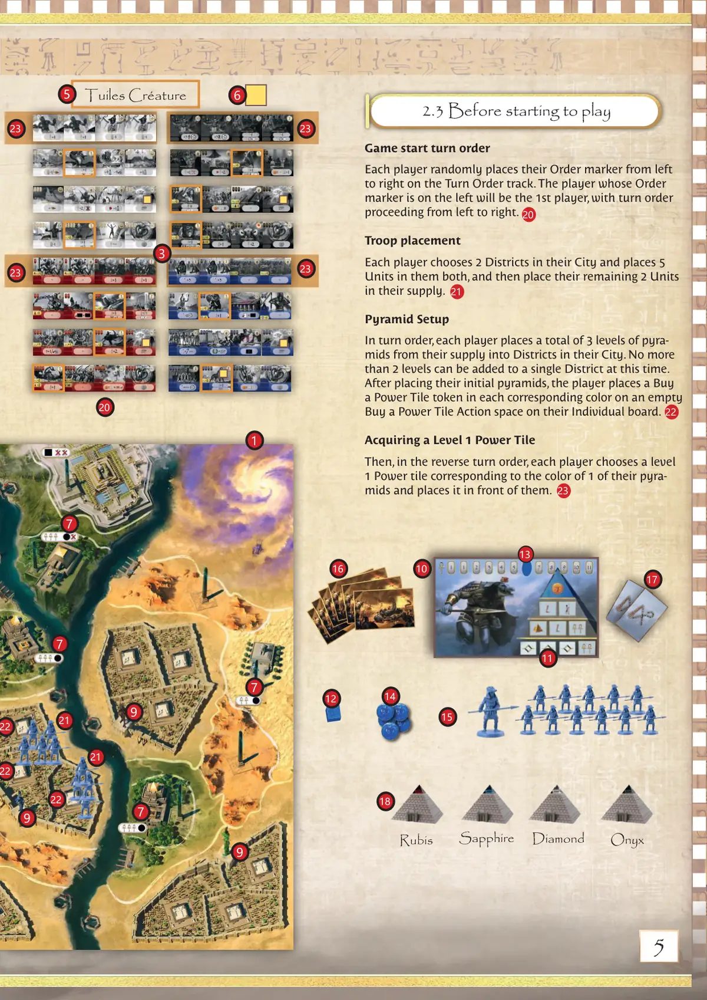
📝 第 5 页 AI 机翻对照（点击展开）
生物板块
+ + 2
+1
+1
+ + 2
+1
+1
游戏开始回合顺序
每位玩家随机将他们的顺序标记从左到右放置在回合顺序轨道上。顺序标记在最左边的玩家将成为第一玩家，回合顺序从左到右进行。
部队放置
每位玩家选择他们城市中的2个区域，并在这两个区域各放置5个单位，然后将剩余的2个单位放置到他们的供应区中。
金字塔设置
按回合顺序，每位玩家从他们的供应区中总共放置3层金字塔到他们城市中的区域。此时，单个区域最多只能添加2层金字塔。
在放置初始金字塔后，玩家将"购买能量板块"指示物放置在他们个人版图上空的"购买能量板块"行动空间中，每个对应颜色放置一个。
获得1级能量板块
然后，按相反的回合顺序，每位玩家选择一个与他们其中一个金字塔颜色对应的1级能量板块，并将其放置在自己面前。
红宝石
蓝宝石
玛瑙
钻石
2.3 开始游戏前
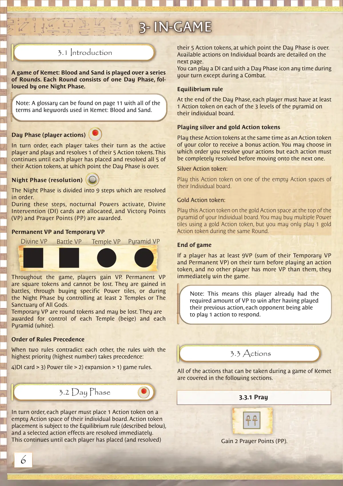
📝 第 6 页 AI 机翻对照（点击展开）
注意：术语表可在第11页找到，其中包含《Kemet: Blood and Sand》中使用的所有术语和关键词。
3.1 介绍
3.3 行动
3.2 白天阶段
3.3.1 祈祷
3- 游戏中
3- 游戏中
《Kemet: Blood and Sand》的游戏通过一系列轮次进行。每轮包含一个白天阶段，随后是一个夜晚阶段。
白天阶段（玩家行动）
按回合顺序，每位玩家轮流成为活跃玩家，并打出并解决其5个行动指示物中的1个。这个过程持续进行，直到每位玩家都已放置并解决完其全部5个行动指示物，此时白天阶段结束。
夜晚阶段（结算）
夜晚阶段分为9个步骤，按顺序解决。
在这些步骤中，夜间能力激活，神迹干预(DI)卡牌被分配，胜利点(VP)和祈祷点(PP)被授予。
永久VP和临时VP
在整个游戏中，玩家获得VP。永久VP是方形指示物，不能被失去。它们通过战斗获得，通过购买特定能力板块获得，或在夜晚阶段通过控制至少2座神庙或众神圣殿获得。
临时VP是圆形指示物，可能会被失去。它们因控制每座神庙（米色）和每座金字塔（白色）而被授予。
规则优先顺序
当两条规则相互矛盾时，优先级最高的规则（数字最大）优先：
4)神迹干预卡 > 3)能力板块 > 2)扩展 > 1)游戏规则。
按回合顺序，每位玩家必须在其个人版图的一个空行动格上放置1个行动指示物。行动指示物的放置受平衡规则（如下所述）约束，所选行动的效果立即解决。
这个过程持续进行，直到每位玩家都已放置（并解决）完其5个行动指示物，此时白天阶段结束。
个人版图上的可用行动详情见下一页。
你可以在你的回合期间任何时候（战斗期间除外）打出带有白天阶段图标的神迹干预卡。
平衡规则
在白天阶段结束时，每位玩家在其个人版图的金字塔的3个层级上都必须至少有1个行动指示物。
使用银色和金色行动指示物
与你的颜色行动指示物同时使用这些行动指示物以获得额外行动。你可以选择解决行动的顺序，但每个行动必须完全解决后才能进入下一个。
银色行动指示物：
在你的个人版图的一个空行动格上使用此行动指示物。
金色行动指示物：
将这个行动指示物放置在你的个人版图金字塔顶部的金色行动区域上。你可以使用一个金色行动指示物购买多个力量板块，但在同一轮中你只能使用1个金色行动指示物。
游戏结束
如果一个玩家在行动指示物回合开始前至少拥有9VP（其临时VP和永久VP的总和），并且没有其他玩家的VP比他们多，他们立即赢得游戏。
在凯美特(Kemet)游戏中可以执行的所有行动将在以下章节中介绍。
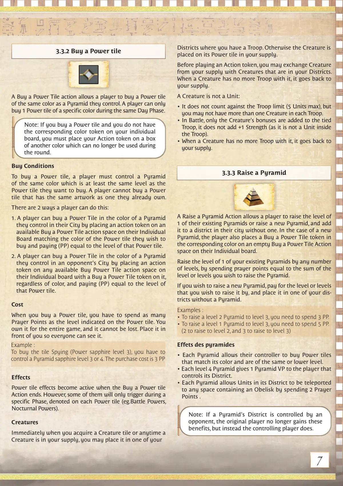
📝 第 7 页 AI 机翻对照（点击展开）
示例：
要购买"间谍"（力量蓝宝石等级3）板块，你必须控制一座等级3或4的蓝宝石金字塔。购买成本是3 PP
3.3.3 提升金字塔
3.3.2 购买力量板块
注意：如果你购买了一块力量板块，而你的个人版图上没有相应颜色的指示物，你必须将你的行动指示物放置在另一个颜色的方框中，该方框在本回合内不能再使用。
注意：如果一座金字塔的区域被对手控制，原始玩家不再获得这些收益，而是由控制该区域的玩家获得。
"提升金字塔"行动允许玩家提升一座现有金字塔的等级或新建一座金字塔，并将其添加到自己城市中一个没有金字塔的区域。如果是新建金字塔，玩家还需在个人版图上相应颜色的"购买力量板块"行动空间中放置一个"购买力量板块"指示物。
通过消耗祈祷点数，其数值等于你希望提升的金字塔等级总和，来提升一座现有金字塔的任意等级。
如果你想新建一座金字塔，支付你希望提升到的等级所需的费用，并将其放置在你没有金字塔的区域之一。
示例：
• 将一座等级2的金字塔提升到等级3，你需要花费3 PP。
• 将一座等级1的金字塔提升到等级3，你需要花费5 PP。
（提升到等级2需要2点，提升到等级3需要3点）
金字塔效果
• 每座金字塔允许其控制者购买与其颜色匹配且等级相同或更低的力量板块。
• 每座等级4的金字塔给控制其区域的玩家1个金字塔胜利点。
• 每座金字塔允许其区域中的单位通过消耗2点祈祷点传送到任何包含方尖碑的空间。
"购买力量板块"行动允许玩家购买一块与他们控制的金字塔颜色相同的力量板块。玩家在同一天阶段内只能购买特定颜色的1块力量板块。
购买条件
要购买一块力量板块，玩家必须控制一座相同颜色且等级不低于他们想要购买的力量板块的金字塔。玩家不能购买与他们已拥有的力量板块图案相同的力量板块。
玩家可以通过以下两种方式实现：
1. 玩家可以通过在个人版图上放置一个行动指示物到可用的"购买力量板块"行动空间上，该空间颜色与他们想要购买的力量板块颜色相匹配，并支付（PP）等于该力量板块等级的费用，来购买与自己城市中控制的一座金字塔颜色相同的力量板块。
2. 玩家可以通过在自己的个人版图上放置一个行动指示物到任何可用的"购买力量板块"行动空间上，该空间上有一个"购买力量板块"指示物，来购买与自己控制的位于对手城市中的一座金字塔颜色相同的力量板块，
无论颜色如何，并支付等于该力量板块等级的（PP）。
费用
当你购买力量板块时，你必须花费与力量板块上所示等级相同的祈祷点。你将拥有它整个游戏，并且它不能被丢失。将它放在你面前，以便每个人都能看到它。
效果
力量板块效果在"购买力量板块"行动结束时生效。然而，其中一些只会在特定阶段触发，每个力量板块上都有标注（例如：战斗力量、夜间力量）。
生物
当你获得生物板块时，或者任何时候生物在你的储备中，你可以将它放置在你有军队的其中一个区域中。否则，生物会被放置在你的储备中其力量板块上。
在行动指示物之前，你可以用你储备中的生物与你区域中的生物进行交换。
当生物不再有军队与之相伴时，它会回到你的储备中。
生物不是单位：
• 它不计入军队限制（最多5个单位），但每个军队中不能有一个以上的生物。
• 在战斗中，只有生物的加成会被添加到绑定的军队中，它不会增加+1力量（因为它不是军队内的单位）。
• 当生物不再有军队与之相伴时，它会回到你的储备中。
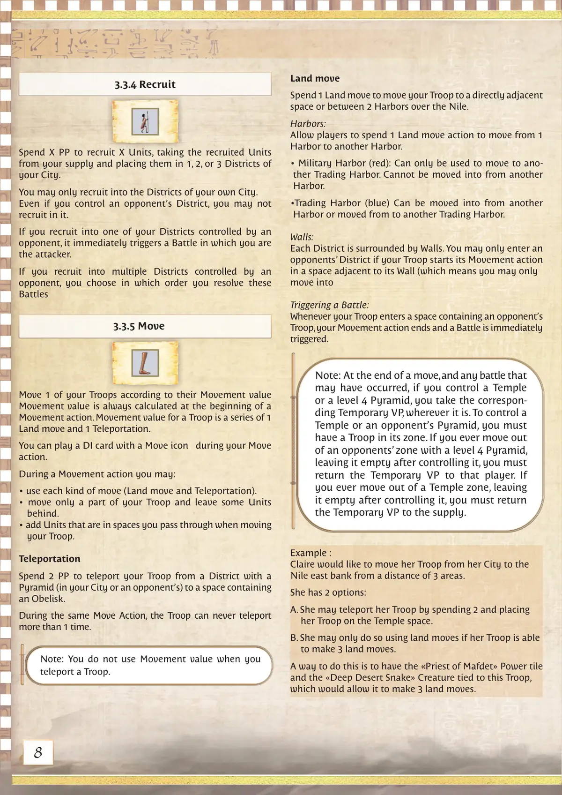
📝 第 8 页 AI 机翻对照（点击展开）
3.3.4 招募
3.3.5 移动
花费 X 点 PP 招募 X 个单位，从你的补给中取出招募的单位，并将它们放置在你的城市的 1、2 或 3 个区域中。
你只能招募到自己城市的区域中。即使你控制了对手的区域，你也不能在其中招募。
如果你招募到被对手控制的自己的区域之一，它会立即触发一场战斗，你是攻击方。
如果你招募到多个被对手控制的区域，你选择解决这些战斗的顺序。
根据你的单位的移动值移动 1 个你的部队。
移动值总是在移动行动开始时计算。一个单位的移动值是一个陆地移动和一个传送的组合。
你可以在你的移动行动期间打出带有移动图标 的 DI 卡牌。
在移动行动期间，你可以：
• 使用每种类型的移动（陆地移动和传送）。
• 只移动你部队的一部分，留下一些单位。
• 添加在你移动部队时经过的区域中的单位。
传送
花费 2 点 PP 将你的部队从一个有金字塔的区域（在你的城市或对手的城市中）传送到一个包含方尖碑的区域。
在同一移动行动中，部队永远不能传送超过 1 次。
注意：当你传送部队时，你不使用移动值。
陆地移动
花费 1 点陆地移动将你的部队移动到直接相邻的区域或通过尼罗河在两个港口之间移动。
港口：
允许玩家花费 1 点陆地移动行动从一个港口移动到另一个港口。
• 军事港口（红色）：只能用于移动到另一个贸易港口。不能从另一个港口移动进入。
• 贸易港口（蓝色）：可以从另一个港口移动进入或从其移动到另一个贸易港口。
城墙：
每个区域都被城墙环绕。只有当你的部队开始其移动行动时位于其城墙相邻的区域时，你才能进入对手的区域（这意味着你只能移动进入
触发战斗：
每当你的部队进入包含对手部队的区域时，你的移动行动结束，并立即触发一场战斗。
注意：在移动结束时，以及可能发生的任何战斗之后，如果你控制了一座神庙或一座 4 级金字塔，你获得相应的临时 VP，无论它在哪里。要控制一座神庙或对手的金字塔，你必须有一个部队在其区域中。如果你曾经带着一个 4 级金字塔离开对手的区域，在控制后将其留空，你必须将临时 VP 返还给该玩家。如果你曾经离开神庙区域，在控制后将其留空，你必须将临时 VP 返还给补给堆。
示例：
Claire 想将她的部队从她的城市移动到尼罗河东岸，距离为 3 个区域。
她有 2 个选择：
A. 她可以通过花费2点，并将她的部队放置在神殿区域来传送她的部队。
B. 只有当她的部队能够进行3次陆地移动时，她才能这样做。
一种实现方式是让«玛芙黛女神的祭司»力量板块和«沙漠深处的蛇»生物与该部队绑定，这将允许它进行3次陆地移动。
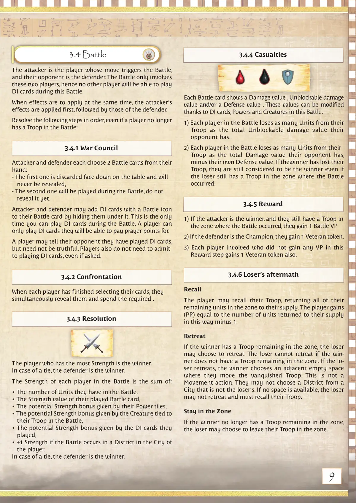
📝 第 9 页 AI 机翻对照（点击展开）
3.4 战斗
触发战斗的玩家是进攻方，他们的对手是防守方。战斗只涉及这两位玩家，因此没有其他玩家能够在此次战斗中打出DI卡牌。
当效果需要同时应用时，先应用进攻方的效果，然后是防守方的效果。
按顺序执行以下步骤，即使玩家在战斗中不再有部队：
3.4.1 战争议会
3.4.2 对抗
3.4.3 决议
3.4.4 伤亡
3.4.5 奖励
3.4.6 失败者余波
进攻方和防守方各自从手牌中选择2张战斗卡牌：
- 第一张牌面朝下弃置在桌上，永远不会被揭示，
- 第二张牌将在战斗中使用，暂时不要揭示。
进攻方和防守方可以将带有战斗图标的DI卡牌隐藏在他们选择的战斗卡牌下方。这是战斗中唯一可以打出DI卡牌的时机。玩家只能打出他们能够支付祈祷点的DI卡牌。
玩家可以告知对手自己打出了DI卡牌，但不必说实话。即使被询问，玩家也不必承认自己是否打出了DI卡牌。
当每位玩家完成选择卡牌后，他们同时揭示这些卡牌并支付所需费用。
力量值最高的玩家是获胜者。
如果平局，防守方获胜。
每位玩家在战斗中的力量值是以下各项的总和：
• 他们在战斗中拥有的单位数量，
• 他们打出的战斗卡牌的力量值，
• 他们的力量板块提供的潜在力量加成，
• 与他们在战斗中的部队绑定的生物提供的潜在力量加成，
• 他们打出的DI卡牌提供的潜在力量加成，
• 如果战斗发生在玩家的城市的一个城区中，+1力量值。
如果平局，防守方获胜。
每张战斗卡牌都显示一个伤害值、不可阻挡伤害值和/或一个防御值。这些值可以通过战斗中的DI卡牌、力量和生物进行修改。
1) 战斗中的每位玩家失去等同于对手总不可阻挡伤害值的部队数量。
2) 战斗中的每位玩家失去等同于对手总伤害值减去自身防御值的部队数量。如果获胜者失去了他们的部队，他们仍然被视为获胜者，即使失败者在战斗发生的区域仍有部队。
1) 如果进攻方是获胜者，并且他们在战斗发生的区域仍有部队，他们获得1个战斗VP
- 如果防守方是冠军，他们获得1个老兵指示物。
3) 在此奖励步骤中未获得任何VP的每位参与者也获得1个老兵指示物。
召回
玩家可以召回他们的部队，将该区域中他们所有剩余的单位归还到他们的供应区。玩家获得(PP)，等于以此方式归还到他们供应区的单位数量减1。
撤退
如果获胜者在该区域仍有部队，失败者可以选择撤退。如果获胜者在该区域没有剩余部队，失败者不能撤退。如果失败者撤退，获胜者会选择一个相邻的空格，他们将战败的部队移动到那里。这不是一个移动行动。他们不能选择不属于失败者城市的城区。如果没有可用空间，失败者不能撤退，必须召回他们的部队。
留在该区域
如果获胜者在该区域不再有剩余部队，失败者可以选择将他们的部队留在该区域。
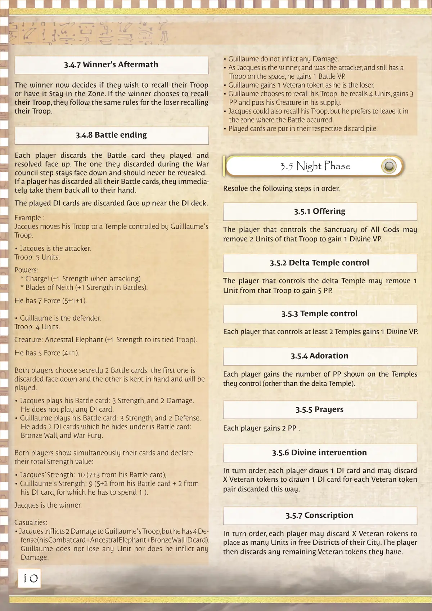
📝 第 10 页 AI 机翻对照（点击展开）
3.5 夜间阶段
示例：
雅克将他的部队移动到由纪尧姆的部队控制的寺庙。
• 雅克是攻击方。
部队：5个单位。
能力：
- 冲锋！（攻击时力量+1）
- 奈斯之刃（战斗中力量+1）。
他有7点力量（5+1+1）。
• 纪尧姆是防御方。
部队：4个单位。
生物：祖象（为其绑定的部队提供+1力量）。
他有5点力量（4+1）。
两位玩家秘密选择2张战斗牌：第一张被面朝下弃置，另一张保留在手牌中，将被打出。
• 雅克打出他的战斗牌：3点力量，2点伤害。
他没有打出任何DI牌。
• 纪尧姆打出他的战斗牌：3点力量，2点防御。
他添加了2张DI牌，隐藏在他的战斗牌下：
青铜墙，和战争狂怒。
两位玩家同时展示他们的牌并宣布他们的总力量值：
• 雅克的力量：10（7+来自他战斗牌的3点），
• 纪尧姆的力量：9（5+来自他战斗牌的2点+来自他DI牌的2点，为此他需要花费1点）。
雅克是胜利者。
伤亡：
• 雅克对纪尧姆的部队造成2点伤害，但纪尧姆有4点防御（他的战斗牌+祖象+青铜墙ID牌）。
纪尧姆没有损失任何单位，也没有造成任何伤害。
• 纪尧姆没有造成任何伤害。
• 由于雅克是胜利者，且是攻击方，并且仍然有一个部队在该区域，他获得1点战斗VP。
• 纪尧姆作为失败者，获得1个老兵指示物。
• 纪尧姆选择召回他的部队：他召回4个单位，获得3点PP，并将他的生物放入他的补给区。
• 雅克也可以召回他的部队，但他更愿意将其留在战斗发生的区域。
• 打出的牌被放入各自的弃牌堆。
3.4.8 战斗结束
3.5.1 献祭
3.5.2 三角洲寺庙控制
3.5.3 寺庙控制
3.5.4 崇拜
3.5.5 祈祷
3.5.6 神圣干预
3.5.7 征兵
每位玩家将他们已打出并结算的战斗牌面朝上弃置。他们在战争议会阶段弃置的那张牌保持面朝下，永远不应被揭示。
如果一位玩家已经弃置了所有的战斗牌，他们立即将所有战斗牌收回手牌。
打出的DI牌被面朝上弃置在DI牌库附近。
控制万神殿的玩家可以移除该部队的2个单位来获得1点神圣VP。
控制三角洲寺庙的玩家可以移除该部队的1个单位来获得5点PP。
每位控制至少2座寺庙的玩家获得1点神圣VP。
每位玩家获得他们所控制的寺庙（三角洲寺庙除外）上显示的PP数量。
每位玩家获得2点PP。
按回合顺序，每位玩家摸1张DI牌，并可以弃置X个老兵指示物，每弃置一对老兵指示物，可以额外摸1张DI牌。
按回合顺序，每位玩家可以弃置X个老兵指示物来
将尽可能多的单位放置在他们城市的空闲区域中。然后，玩家弃置他们拥有的任何剩余的 Veteran 指示物。
3.4.7 胜利者的战后处理
胜利者现在决定他们是否希望召回他们的部队或让其留在该区域。如果胜利者选择召回他们的部队，他们遵循与失败者召回部队相同的规则。
按顺序执行以下步骤。
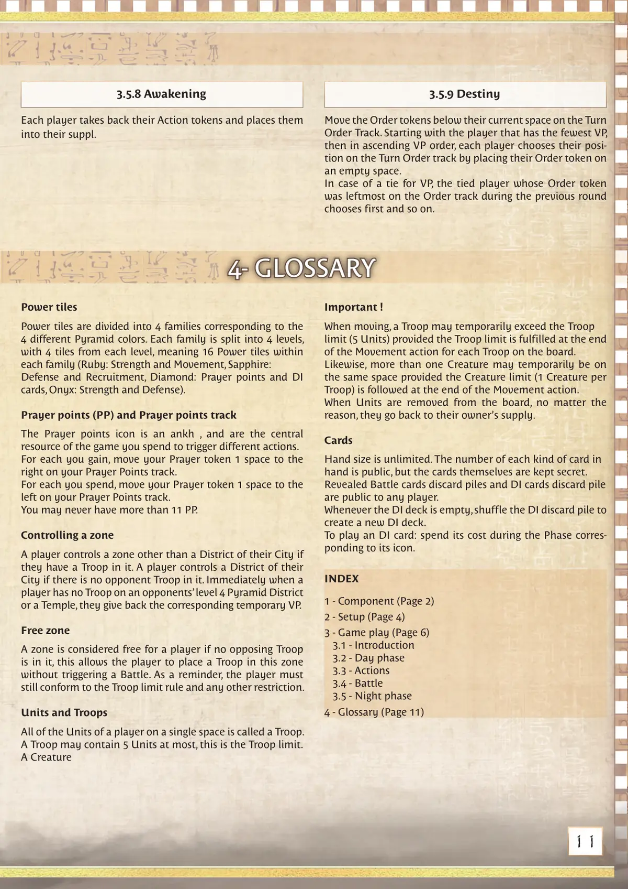
📝 第 11 页 AI 机翻对照（点击展开）
3.5.8 觉醒
3.5.9 命运
每位玩家取回自己的行动指示物，并将其放入自己的补充堆中。
将回合顺序轨道上当前空间下方的顺序指示物移开。从拥有最少VP的玩家开始，然后按VP升序，每位玩家通过将顺序指示物放在一个空位上来选择自己在回合顺序轨道上的位置。
如果VP出现平局，则在上一轮回合顺序轨道上顺序指示物最靠左的平局玩家先选择，依此类推。
力量板块
力量板块分为4个系列，对应4种不同的金字塔颜色。每个系列分为4个等级，每个等级有4个板块，意味着每个系列有16个力量板块（红宝石：力量和移动，蓝宝石：防御和招募，钻石：祈祷点和DI卡牌，黑曜石：力量和防御）。
祈祷点(PP)和祈祷点轨道
祈祷点图标是安卡（ankh），是游戏中的核心资源，用于触发不同的行动。
每获得1点祈祷点，将你的祈祷指示物在你的祈祷点轨道上向右移动1格。
每花费1点祈祷点，将你的祈祷指示物在你的祈祷点轨道上向左移动1格。
你的祈祷点数不能超过11点。
控制区域
如果玩家在某区域（除自己城市的城区外）有部队，则该玩家控制该区域。如果玩家的城区内没有对手部队，则该玩家控制该城区。当玩家在对手的4级金字塔城区或神庙上没有部队时，立即归还相应的临时VP。
自由区域
如果某区域没有对手部队，则该区域对玩家来说是自由的，这允许玩家在该区域放置部队而不触发战斗。提醒一下，玩家仍必须遵守部队限制规则和任何其他限制。
单位和部队
玩家在同一空间上的所有单位称为一个部队。一个部队最多可包含5个单位，这是部队限制。
一个生物
重要！
移动时，部队可以暂时超过部队限制（5个单位），前提是在移动行动结束时，每个在版图上的部队都满足部队限制。
同样，在移动行动结束时，只要遵循生物限制（每个部队1个生物），可以有多个生物暂时在同一空间上。
无论原因如何，当单位从版图上移除时，它们会回到其拥有者的补充堆中。
卡牌
手牌数量无限制。手中每种卡牌的数量是公开的，但卡牌本身是保密的。已揭示的战斗卡牌弃牌堆和DI卡牌弃牌堆对所有玩家都是公开的。
每当DI牌库为空时，将DI弃牌堆洗牌，创建一个新的DI牌库。
打出DI卡牌：在相应阶段花费其成本...
4- 词汇表
4- 词汇表
索引
1 - 组件 (第2页)
2 - 设置 (第4页)
3 - 游戏进行 (第6页)
3.1 - 介绍
3.2 - 白天阶段
3.3 - 行动
3.4 - 战斗
3.5 - 夜晚阶段
4 - 词汇表 (第11页)